Benjamin Jäger
Slides first developed by Mine Çetinkaya-Rundel. Derivative of OpenIntro slides, shared under a CC BY-SA licence.
Between 1990 - 1992 researchers in the UK collected data on traffic flow, accidents, and hospital admissions on Friday 13\(^{\text{th}}\) and the previous Friday, Friday 6\(^{\text{th}}\). Below is an excerpt from this data set on traffic flow. We can assume that traffic flow on given day at locations 1 and 2 are independent.
| type | date | 6\(^{\text{th}}\) | 13\(^{\text{th}}\) | diff | location | |
|---|---|---|---|---|---|---|
| 1 | traffic | 1990, July | 139246 | 138548 | 698 | loc 1 |
| 2 | traffic | 1990, July | 134012 | 132908 | 1104 | loc 2 |
| 3 | traffic | 1991, September | 137055 | 136018 | 1037 | loc 1 |
| 4 | traffic | 1991, September | 133732 | 131843 | 1889 | loc 2 |
| 5 | traffic | 1991, December | 123552 | 121641 | 1911 | loc 1 |
| 6 | traffic | 1991, December | 121139 | 118723 | 2416 | loc 2 |
| 7 | traffic | 1992, March | 128293 | 125532 | 2761 | loc 1 |
| 8 | traffic | 1992, March | 124631 | 120249 | 4382 | loc 2 |
| 9 | traffic | 1992, November | 124609 | 122770 | 1839 | loc 1 |
| 10 | traffic | 1992, November | 117584 | 117263 | 321 | loc 2 |
Scanlon, T.J., Luben, R.N., Scanlon, F.L., Singleton, N. (1993), “Is Friday the 13th Bad For Your Health?,” BMJ, 307, 1584-1586.
We want to investigate if people’s behavior is different on Friday 13\(^{\text{th}}\) compared to Friday 6\(^{\text{th}}\).
One approach is to compare the traffic flow on these two days.
\(H_0:\) Average traffic flow on Friday 6\(^{\text{th}}\) and 13\(^{\text{th}}\) are equal.
\(H_A:\) Average traffic flow on Friday 6\(^{\text{th}}\) and 13\(^{\text{th}}\) are different.
Each case in the data set represents traffic flow recorded at the same location in the same month of the same year: one count from Friday 6\(^{\text{th}}\) and the other Friday 13\(^{\text{th}}\). Are these two counts independent?
No
What are the hypotheses for testing for a difference between the average traffic flow between Friday 6\(^{\text{th}}\) and 13\(^{\text{th}}\)?
\(H_0:\) \(\mu_{diff} = 0\)
\(H_A:\) \(\mu_{diff} \ne 0\)
Independence: We are told to assume that cases (rows) are independent.
Sample size / skew:
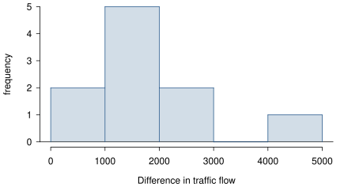
So what do we do when the sample size is small?
As long as observations are independent, and the population distribution is not extremely skewed, a large sample would ensure that…
The CLT, which states that sampling distributions will be nearly normal, holds true for any sample size as long as the population distribution is nearly normal.
While this is a helpful special case, it’s inherently difficult to verify normality in small data sets.
We should exercise caution when verifying the normality condition for small samples. It is important to not only examine the data but also think about where the data come from.
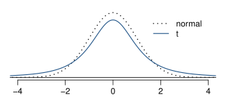
What happens to shape of the \(t\) distribution as \(df\) increases?
Approaches normal.
| type | date | 6\(^{\text{th}}\) | 13\(^{\text{th}}\) | diff | location | |
|---|---|---|---|---|---|---|
| 1 | traffic | 1990, July | 139246 | 138548 | 698 | loc 1 |
| 2 | traffic | 1990, July | 134012 | 132908 | 1104 | loc 2 |
| 3 | traffic | 1991, September | 137055 | 136018 | 1037 | loc 1 |
| 4 | traffic | 1991, September | 133732 | 131843 | 1889 | loc 2 |
| 5 | traffic | 1991, December | 123552 | 121641 | 1911 | loc 1 |
| 6 | traffic | 1991, December | 121139 | 118723 | 2416 | loc 2 |
| 7 | traffic | 1992, March | 128293 | 125532 | 2761 | loc 1 |
| 8 | traffic | 1992, March | 124631 | 120249 | 4382 | loc 2 |
| 9 | traffic | 1992, November | 124609 | 122770 | 1839 | loc 1 |
| 10 | traffic | 1992, November | 117584 | 117263 | 321 | loc 2 |
\[\begin{align*} \hspace{6cm} &\color{#FF8000}{\text{$\overline{x}_{diff} = 1836$}} \\ & \color{#FF8000}{\text{$s_{diff} = 1176$}} \\ & \color{#FF8000}{\text{$n = 10$}} \end{align*}\]
Test statistic for inference on a small sample mean
The test statistic for inference on a small sample (\(n < 50\)) mean is the \(T\) statistic with \(df = n - 1\). \[T_{df} = \frac{\text{point estimate} - \text{null value}}{SE}\]
in context…
\[\begin{eqnarray*} point~estimate &=& \overline{x}_{diff} = 1836 \\ \phantom{SE }&\phantom{=}&\phantom{ \frac{s_{diff}}{\sqrt{n}} = \frac{1176}{\sqrt{10}} = 372} \\ \phantom{T }&\phantom{=}&\phantom{ \frac{1836 - 0}{372} = 4.94} \\ \phantom{df }&\phantom{=}&\phantom{ 10 - 1 = 9} \end{eqnarray*}\]
\[\begin{eqnarray*} point~estimate &=& \overline{x}_{diff} = 1836 \\ SE &=& \frac{s_{diff}}{\sqrt{n}} = \frac{1176}{\sqrt{10}} = 372 \\ \phantom{T }&\phantom{=}&\phantom{ \frac{1836 - 0}{372} = 4.94} \\ \phantom{df }&\phantom{=}&\phantom{ 10 - 1 = 9} \end{eqnarray*}\]
\[\begin{eqnarray*} point~estimate &=& \overline{x}_{diff} = 1836 \\ SE &=& \frac{s_{diff}}{\sqrt{n}} = \frac{1176}{\sqrt{10}} = 372 \\ T &=& \frac{1836 - 0}{372} = 4.94 \\ \phantom{df }&\phantom{=}&\phantom{ 10 - 1 = 9} \end{eqnarray*}\]
\[\begin{eqnarray*} point~estimate &=& \overline{x}_{diff} = 1836 \\ SE &=& \frac{s_{diff}}{\sqrt{n}} = \frac{1176}{\sqrt{10}} = 372 \\ T &=& \frac{1836 - 0}{372} = 4.94 \\ df &=& 10 - 1 = 9 \end{eqnarray*}\]
The p-value is, once again, calculated as the area tail area under the \(t\) distribution.
Using R:
2 * pt(4.94, df = 9, lower.tail = FALSE) \(\phantom{aaaaaaa}\) [1] 0.0008022394
Using a web app:
What is the conclusion of this hypothesis test?
Since the p-value is quite low, we conclude that the data provide strong evidence of a difference between traffic flow on Friday 6\(^{\text{th}}\) and 13\(^{\text{th}}\).
qt(p = 0.975, df = 9) \(\phantom{aaaaaaa}\) [1] 2.262157
Which of the following is the correct calculation of a 95% confidence interval for the difference between the traffic flow between Friday 6\(^{\text{th}}\) and 13\(^{\text{th}}\)?
\[\overline{x}_{diff} = 1836 \qquad s_{diff} = 1176 \qquad n = 10 \qquad SE = 372\]
\(1836 \pm 2.26 \times 372 \rightarrow (995, 2677)\)
Which of the following is the best interpretation for the confidence interval we just calculated? \[\mu_{diff: 6th - 13th} = (995, 2677)\]
We are 95% confident that …
on Friday 13\(^{\text{th}}\) there are 995 to 2,677 fewer cars on the road than on the Friday 6\(^{\text{th}}\), on average.
Does the conclusion from the hypothesis test agree with the findings of the confidence interval?
Yes, the hypothesis test found a significant difference, and the CI does not contain the null value of 0.
Do you think the findings of this study suggests that people believe Friday 13\(^{\text{th}}\) is a day of bad luck?
No, this is an observational study. We have just observed a significant difference between the number of cars on the road on these two days. We have not tested for people’s beliefs.
If \(\sigma\) is unknown, use the \(t\)-distribution with \(SE = \frac{s}{\sqrt{n}}\).
Conditions:
Hypothesis testing: \[T_{df} = \frac{\text{point estimate} - \text{null value}}{SE}\text{, where }df = n - 1\]
Confidence interval: \(\text{point estimate} \pm t_{df}^\star \times SE\)
The example we used was for paired means (difference between dependent groups). We took the difference between the observations and used only these differences (one sample) in our analysis, therefore the mechanics are the same as when we are working with just one sample.
200 observations were randomly sampled from the High School and Beyond survey. The same students took a reading and writing test and their scores are shown below. At a first glance, does there appear to be a difference between the average reading and writing test score?
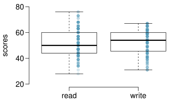
The same students took a reading and writing test and their scores are shown below. Are the reading and writing scores of each student independent of each other?
| id | read | write | |
|---|---|---|---|
| 1 | 70 | 57 | 52 |
| 2 | 86 | 44 | 33 |
| 3 | 141 | 63 | 44 |
| 4 | 172 | 47 | 52 |
| \(\vdots\) | \(\vdots\) | \(\vdots\) | \(\vdots\) |
| 200 | 137 | 63 | 65 |
| id | read | write | diff | |
|---|---|---|---|---|
| 1 | 70 | 57 | 52 | 5 |
| 2 | 86 | 44 | 33 | 11 |
| 3 | 141 | 63 | 44 | 19 |
| 4 | 172 | 47 | 52 | -5 |
| () | () | () | () | () |
| 200 | 137 | 63 | 65 | -2 |
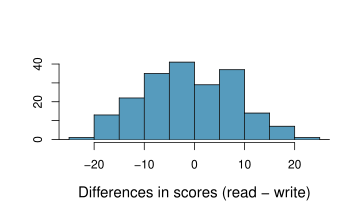
If in fact there was no difference between the scores on the reading and writing exams, what would you expect the average difference to be?
0
What are the hypotheses for testing if there is a difference between the average reading and writing scores?
Since students are sampled randomly and are less than 10% of all high school students, we can assume that the difference between the reading and writing scores of one student in the sample is independent of another.
The observed average difference between the two scores is -0.545 points and the standard deviation of the difference is 8.887 points. Do these data provide convincing evidence of a difference between the average scores on the two exams? Use \(\alpha = 0.05\).
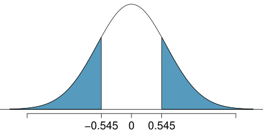
\[\begin{eqnarray*} T &=& \frac{-0.545 - 0}{\frac{8.887}{\sqrt{200}}} \\ &=& \frac{-0.545}{0.628} = -0.87 \\ df &=& 200 - 1 = 199 \\ p-value &=& 0.1927 \times 2 = 0.3854 \end{eqnarray*}\]
Since p-value \(>\) 0.05, fail to reject, the data do not provide convincing evidence of a difference between the average reading and writing scores.
Which of the following is the correct interpretation of the p-value?
[Participate ⟹ strawpoll.live and use the code 833295]
Suppose we were to construct a 95% confidence interval for the average difference between the reading and writing scores. Would you expect this interval to include 0?
\[\begin{eqnarray*} -0.545 \pm 1.97 \frac{8.887}{\sqrt{200}} &=& -0.545 \pm 1.97 \times 0.628 \\ &=& -0.545 \pm 1.24 \\ &=& (-1.785, 0.695) \end{eqnarray*}\]
| 0.99 carat | 1 carat | |
| pt99 | pt100 | |
| \(\overline{x}\) | 44.50 | 53.43 |
| \(s\) | 13.32 | 12.22 |
| \(n\) | 23 | 30 |
These data are a random sample from the diamonds data set in ggplot2 R package.
Which of the following is the correct set of hypotheses for testing if the average point price of 1 carat diamonds (\(_{pt100}\)) is higher than the average point price of 0.99 carat diamonds (\(_{pt99}\))?
\(H_0:\) \(\mu_{pt99} = \mu_{pt100}\)
\(H_A:\) \(\mu_{pt99} < \mu_{pt100}\)
Which of the following does not need to be satisfied in order to conduct this hypothesis test using theoretical methods?
[Participate ⟹ strawpoll.live and use the code 833295]
Test statistic for inference on the difference of two small sample means
The test statistic for inference on the difference of two means where \(\sigma_1\) and \(\sigma_2\) are unknown is the \(T\) statistic. \[T_{df} = \frac{\text{point estimate} - \text{null value}}{SE}\] where \[SE = \sqrt{ \frac{s_1^2}{n_1} + \frac{s_2^2}{n_2} } \qquad \text{ and } \qquad df = min(n_1 - 1, n_2 - 1)\]
The calculation of the \(df\) is actually much more complicated. For simplicity we’ll use the above formula to estimate the true \(df\) when conducting the analysis by hand.
| 0.99 carat | 1 carat | |
| pt99 | pt100 | |
| \(\overline{x}\) | 44.50 | 53.43 |
| \(s\) | 13.32 | 12.22 |
| \(n\) | 23 | 30 |
in context…
\[\begin{eqnarray*} T &=& \frac{\text{point estimate} - \text{null value} }{SE} \\ &\phantom{=}&\phantom{ \frac{(44.50 - 53.43) - 0}{ \sqrt{\frac{13.32^2}{23} + \frac{12.22^2}{30} }}} \\ &\phantom{=}&\phantom{ \frac{-8.93}{3.56}} \\ &\phantom{=}&\phantom{ -2.508} \end{eqnarray*}\]
\[\begin{eqnarray*} T &=& \frac{\text{point estimate} - \text{null value} }{SE} \\ &=& \frac{(44.50 - 53.43) - 0}{ \sqrt{\frac{13.32^2}{23} + \frac{12.22^2}{30} }} \\ &=& \frac{-8.93}{3.56} \\ &=& -2.508 \end{eqnarray*}\]
Which of the following is the correct \(df\) for this hypothesis test?
\(\rightarrow df = min(n_{pt99} - 1, n_{pt100} - 1)\)
\(= min(23 - 1, 30 - 1)\)
\(= min(22,29) = 22\)
Which of the following is the correct p-value for this hypothesis test?
\[T = -2.508 \qquad df = 22\]
between 0.01 and 0.025
pt(q = -2.508, df = 22) [1] 0.0100071
What is the conclusion of the hypothesis test? How (if at all) would this conclusion change your behavior if you went diamond shopping?
What is the equivalent confidence level for a one-sided hypothesis test at \(\alpha = 0.05\)?
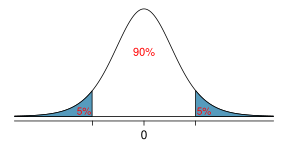
What is the appropriate \(t^\star\) for a confidence interval for the average difference between the point prices of 0.99 and 1 carat diamonds?
qt(p = 0.95, df = 22) \(\phantom{aaaaaaa}\) [1] 1.717144
Calculate the interval, and interpret it in context.
\[\text{point estimate} \pm ME\]
\[\begin{eqnarray*} (\overline{x}_{pt99} - \overline{x}_{pt1}) \pm t^\star_{df} \times SE &=& (44.50 - 53.43) \pm 1.72 \times 3.56 \\ &\phantom{=}&\phantom{ -8.93 \pm 6.12} \\ &\phantom{=}&\phantom{ (-15.05, -2.81)} \end{eqnarray*}\]
\[\begin{eqnarray*} (\overline{x}_{pt99} - \overline{x}_{pt1}) \pm t^\star_{df} \times SE &=& (44.50 - 53.43) \pm 1.72 \times 3.56 \\ &=& -8.93 \pm 6.12 \\ &=& (-15.05, -2.81) \end{eqnarray*}\]
We are 90% confident that the average point price of a 0.99 carat diamond is $15.05 to $2.81 lower than the average point price of a 1 carat diamond.
If \(\sigma_1\) or \(\sigma_2\) is unknown, difference between the sample means follow a \(t\)-distribution with \(SE = \sqrt{ \frac{s_1^2}{n_1} + \frac{s_2^2}{n_1} }\).
Conditions:
\[T_{df} = \frac{\text{point estimate} - \text{null value}}{SE}\]
\[\text{where }df = min(n_1 - 1, n_2 - 1)\]
\[\text{point estimate} \pm t_{df}^\star \times SE\]
| Decision | |||
| fail to reject \(H_0\) | reject \(H_0\) | ||
| \(H_0\) true | \(1 - \alpha\) | Type 1 Error, \(\alpha\) | |
| \(H_A\) true | Type 2 Error, \(\beta\) | Power, \(1 - \beta\) | |
If the alternative hypothesis is actually true, what is the chance that we make a Type 2 Error, i.e. we fail to reject the null hypothesis even when we should reject it?
Suppose a pharmaceutical company has developed a new drug for lowering blood pressure, and they are preparing a clinical trial to test the drug’s effectiveness. They recruit people who are taking a particular standard blood pressure medication, and half of the subjects are given the new drug (treatment) and the other half continue to take their current medication through generic-looking pills to ensure blinding (control). What are the hypotheses for a two-sided hypothesis test in this context?
\[\begin{align*} H_0&: \mu_{treatment} - \mu_{control} = 0 \\ H_A&: \mu_{treatment} - \mu_{control} \ne 0 \end{align*}\]
Suppose researchers would like to run the clinical trial on patients with systolic blood pressures between 140 and 180 mmHg. Suppose previously published studies suggest that the standard deviation of the patients’ blood pressures will be about 12 mmHg and the distribution of patient blood pressures will be approximately symmetric. If we had 100 patients per group, what would be the approximate standard error for difference in sample means of the treatment and control groups?
\[SE = \sqrt{ \frac{12^2}{100} + \frac{12^2}{100} } = 1.70\]
For what values of the difference between the observed averages of blood pressure in treatment and control groups (effect size) would we reject the null hypothesis at the 5% significance level?
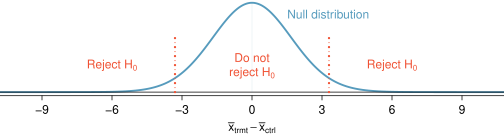
The difference should be \[\text{at least } 1.96 * 1.70 = 3.332 \text{ or at most } -1.96 * 1.70 = -3.332.\]
Suppose that the company researchers care about finding any effect on blood pressure that is 3 mmHg or larger vs the standard medication. What is the power of the test that can detect this effect?
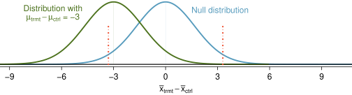
\[Z = \frac{-3.332 - (-3)}{1.70} = -0.20\]
\[P(Z < -0.20) = 0.4207\]
What sample size will lead to a power of 80% for this test?
\[SE = \frac{3}{t^\star_\text{green} + t^\star_\text{blue}} = \frac{3}{0.84 + 1.96} = 1.07142\]
\[1.07142 = \sqrt{ \frac{12^2}{n} + \frac{12^2}{n} }\]
\[n = 250.88 \rightarrow n \ge 251\]
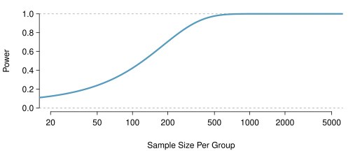
There are several ways to increase power (and hence decrease type 2 error rate):
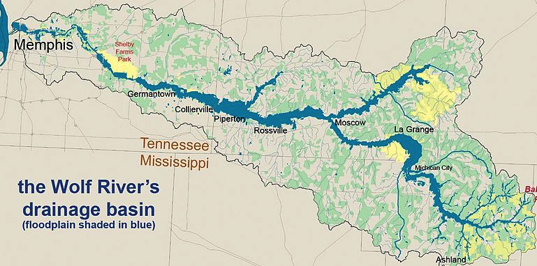
Aldrin concentration (nanograms per liter) at three levels of depth.
| aldrin | depth | |
|---|---|---|
| 1 | 3.80 | bottom |
| 2 | 4.80 | bottom |
| … | ||
| 10 | 8.80 | bottom |
| 11 | 3.20 | middepth |
| 12 | 3.80 | middepth |
| … | ||
| 20 | 6.60 | middepth |
| 21 | 3.10 | surface |
| 22 | 3.60 | surface |
| … | ||
| 30 | 5.20 | surface |
Aldrin concentration (nanograms per liter) at three levels of depth.
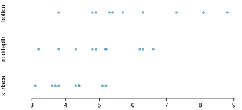
| n | mean | sd | |
|---|---|---|---|
| bottom | 10 | 6.04 | 1.58 |
| middepth | 10 | 5.05 | 1.10 |
| surface | 10 | 4.20 | 0.66 |
| overall | 30 | 5.1 0 | 1.37 |
Is there a difference between the mean aldrin concentrations among the three levels?
ANOVA is used to assess whether the mean of the outcome variable is different for different levels of a categorical variable.
The observations should be independent within and between groups
The observations within each group should be nearly normal.
How do we check for normality?
The variability across the groups should be about equal.
How can we check this condition?
\[\color{#0DA6FF}{\text{$z$/$t$ test}}\] Compare means from two groups to see whether they are so far apart that the observed difference cannot reasonably be attributed to sampling variability. \[H_0: \mu_1 = \mu_2\]
\[\color{#0DA6FF}{ANOVA}\] Compare the means from two or more groups to see whether they are so far apart that the observed differences cannot all reasonably be attributed to sampling variability. \[H_0: \mu_1 = \mu_2 = \cdots = \mu_k\]
\[\color{#0DA6FF}{\text{$z$/$t$ test}}\] Compute a test statistic (a ratio). \[z / t = \frac{(\overline{x}_1 - \overline{x}_2) - (\mu_1 - \mu_2)}{SE(\overline{x}_1 - \overline{x}_2)}\]
\[\color{#0DA6FF}{ANOVA}\] Compute a test statistic (a ratio). \[F = \frac{\text{variability bet. groups}}{\text{variability w/in groups}}\]
What are the correct hypotheses for testing for a difference between the mean aldrin concentrations among the three levels?
\(H_0: \mu_B = \mu_M = \mu_S\)
\(H_A:\) At least one mean is different.
Does there appear to be a lot of variability within groups? How about between groups?
\[F = \frac{\text{variability bet. groups}}{\text{variability w/in groups}}\]
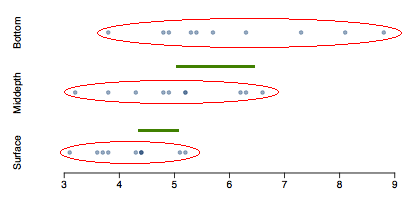
\[F = \frac{\text{variability bet. groups}}{\text{variability w/in groups}}\]
| Df | Sum Sq | Mean Sq | F value | Pr((>)F) | ||
|---|---|---|---|---|---|---|
| (Group) | depth | 2 | 16.96 | 8.48 | 6.13 | 0.0063 |
| (Error) | Residuals | 27 | 37.33 | 1.38 | ||
| Total | 29 | 54.29 |
Degrees of freedom associated with ANOVA
| Df | Sum Sq | Mean Sq | F value | Pr((>)F) | ||
|---|---|---|---|---|---|---|
| (Group) | depth | 2 | 16.96 | 8.48 | 6.13 | 0.0063 |
| (Error) | Residuals | 27 | 37.33 | 1.38 | ||
| Total | 29 | 54.29 |
Sum of squares between groups, SSG
Measures the variability between groups \[SSG = \sum_{i = 1}^{k} n_i (\overline{x}_i - \overline{x})^2\] where \(n_i\) is each group size, \(\overline{x}_i\) is the average for each group, \(\overline{x}\) is the overall (grand) mean.
| n | mean | |
|---|---|---|
| bottom | 10 | 6.04 |
| middepth | 10 | 5.05 |
| surface | 10 | 4.2 |
| overall | 30 | 5.1 |
\[\begin{eqnarray*} SSG &=& \left( 10 \times (6.04 - 5.1)^2 \right) \\ &+& \left( 10 \times (5.05 - 5.1)^2 \right) \\ &{+}&{ \left( 10 \times (4.2 - 5.1)^2 \right)} \\ &{=}&{ 16.96} \\ \end{eqnarray*}\]
| Df | Sum Sq | Mean Sq | F value | Pr((>)F) | ||
|---|---|---|---|---|---|---|
| (Group) | depth | 2 | 16.96 | 8.48 | 6.13 | 0.0063 |
| (Error) | Residuals | 27 | 37.33 | 1.38 | ||
| Total | 29 | 54.29 |
Sum of squares total, SST
Measures the variability between groups \[SST = \sum_{i = 1}^{n} (x_i - \overline{x})^2\] where \(x_i\) represent each observation in the dataset.
\[\begin{eqnarray*} SST &=& (3.8 - 5.1)^2 + (4.8 - 5.1)^2 + (4.9 - 5.1)^2 + \cdots + (5.2 - 5.1)^2 \\ &{=}&{ (-1.3)^2 + (-0.3)^2 + (-0.2)^2 + \cdots + (0.1)^2} \\ &{=}&{ 1.69 + 0.09 + 0.04 + \cdots + 0.01} \\ &{=}&{ 54.29} \end{eqnarray*}\]
| Df | Sum Sq | Mean Sq | F value | Pr((>)F) | ||
|---|---|---|---|---|---|---|
| (Group) | depth | 2 | 16.96 | 8.48 | 6.13 | 0.0063 |
| (Error) | Residuals | 27 | 37.33 | 1.38 | ||
| Total | 29 | 54.29 |
Sum of squares error, SSE
Measures the variability within groups: \[SSE = SST - SSG\]
\[SSE = 54.29 - 16.96 = 37.33\]
| Df | Sum Sq | Mean Sq | F value | Pr((>)F) | ||
|---|---|---|---|---|---|---|
| (Group) | depth | 2 | 16.96 | 8.48 | 6.13 | 0.0063 |
| (Error) | Residuals | 27 | 37.33 | 1.38 | ||
| Total | 29 | 54.29 |
Mean square error
Mean square error is calculated as sum of squares divided by the degrees of freedom.
\[\begin{eqnarray*} MSG &=& 16.96 / 2 = 8.48 \\ {MSE }&{=}&{ 37.33 / 27 = 1.38} \end{eqnarray*}\]
| Df | Sum Sq | Mean Sq | F value | Pr((>)F) | ||
|---|---|---|---|---|---|---|
| (Group) | depth | 2 | 16.96 | 8.48 | 6.14 | 0.0063 |
| (Error) | Residuals | 27 | 37.33 | 1.38 | ||
| Total | 29 | 54.29 |
Test statistic, F value
As we discussed before, the F statistic is the ratio of the between group and within group variability. \[F = \frac{MSG}{MSE}\]
\[F = \frac{8.48}{1.38} = 6.14\]
| Df | Sum Sq | Mean Sq | F value | Pr((>)F) | ||
|---|---|---|---|---|---|---|
| (Group) | depth | 2 | 16.96 | 8.48 | 6.14 | 0.0063 |
| (Error) | Residuals | 27 | 37.33 | 1.38 | ||
| Total | 29 | 54.29 |
p-value
p-value is the probability of at least as large a ratio between the “between group” and “within group” variability, if in fact the means of all groups are equal. It’s calculated as the area under the F curve, with degrees of freedom \(df_G\) and \(df_E\), above the observed F statistic.
What is the conclusion of the hypothesis test?
The data provide convincing evidence that the average aldrin concentration
[Participate ⟹ strawpoll.live and use the code 833295]
Does this condition appear to be satisfied?
In this study the we have no reason to believe that the aldrin concentration won’t be independent of each other.
Does this condition appear to be satisfied?
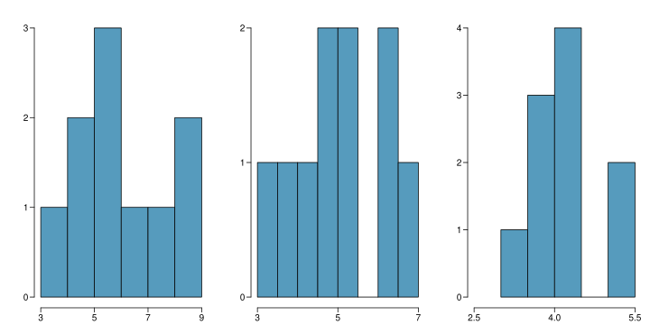
Does this condition appear to be satisfied?
Earlier we concluded that at least one pair of means differ. The natural question that follows is “which ones?”
We can do two sample \(t\) tests for differences in each possible pair of groups.
Can you see any pitfalls with this approach?
The scenario of testing many pairs of groups is called multiple comparisons.
The Bonferroni correction suggests that a more stringent significance level is more appropriate for these tests:
\[\alpha^\star = \alpha / K\]
where \(K\) is the number of comparisons being considered.
If there are \(k\) groups, then usually all possible pairs are compared and \(\phantom{aaa}\) \(K = \frac{k (k - 1)}{2}\).
In the aldrin data set depth has 3 levels: bottom, mid-depth, and surface. If \(\alpha = 0.05\), what should be the modified significance level for two sample \(t\) tests for determining which pairs of groups have significantly different means?
\(\alpha^* = 0.05 / 3 = 0.0167\)
Based on the box plots below, which means would you expect to be significantly different?
If the ANOVA assumption of equal variability across groups is satisfied, we can use the data from all groups to estimate variability:
Difference in two means: after ANOVA
\[SE = \sqrt{ \frac{\sigma_1^2}{n_1} + \frac{\sigma_2^2}{n_2} } \approx \sqrt{ \frac{MSE}{n_1} + \frac{MSE}{n_2} }\]
Is there a difference between the average aldrin concentration at the bottom and at mid depth?
| n | mean | sd | |
|---|---|---|---|
| bottom | 10 | 6.04 | 1.58 |
| middepth | 10 | 5.05 | 1.10 |
| surface | 10 | 4.2 | 0.66 |
| overall | 30 | 5.1 | 1.37 |
| Df | Sum Sq | Mean Sq | F value | Pr(\(>\)F) | |
|---|---|---|---|---|---|
| depth | 2 | 16.96 | 8.48 | 6.13 | 0.0063 |
| Residuals | 27 | 37.33 | 1.38 | ||
| Total | 29 | 54.29 |
\[\begin{eqnarray*} T_{df_E} &=& \frac{(\overline{x}_{bottom} - \overline{x}_{middepth})}{\sqrt{ \frac{MSE}{n_{bottom}} + \frac{MSE}{n_{middepth}} }} \\ T_{27} &=& \frac{( 6.04 - 5.05 )}{\sqrt{ \frac{1.38}{10} + \frac{1.38}{10} }} = \frac{0.99}{0.53} =1.87 \\ 0.05 &<& p-value < 0.10 \qquad \text{{ (two-sided)}} \\ \alpha^\star &=& 0.05 / 3 = 0.0167 \end{eqnarray*}\]
Fail to reject \(H_0\), data do not provide convincing evidence of a difference between average aldrin concentrations at bottom and mid depth.
Pairwise comparisons
Is there a difference between the average aldrin concentration at the bottom and at surface?
\[\begin{eqnarray*} T_{df_E} &=& \frac{(\overline{x}_{bottom} - \overline{x}_{surface})}{\sqrt{ \frac{MSE}{n_{bottom}} + \frac{MSE}{n_{surface}} }} \\ T_{27} &=& \frac{( 6.04 - 4.02 )}{\sqrt{ \frac{1.38}{10} + \frac{1.38}{10} }} = \frac{2.02}{0.53} =3.81 \\ p-value &<& 0.01 \qquad \text{{ (two-sided)}} \\ \alpha^\star &=& 0.05 / 3 = 0.0167 \end{eqnarray*}\]
Reject \(H_0\), the data provide convincing evidence of a difference between the average aldrin concentrations at bottom and surface.
DSK803 · Chapter 7: Inference for numerical data